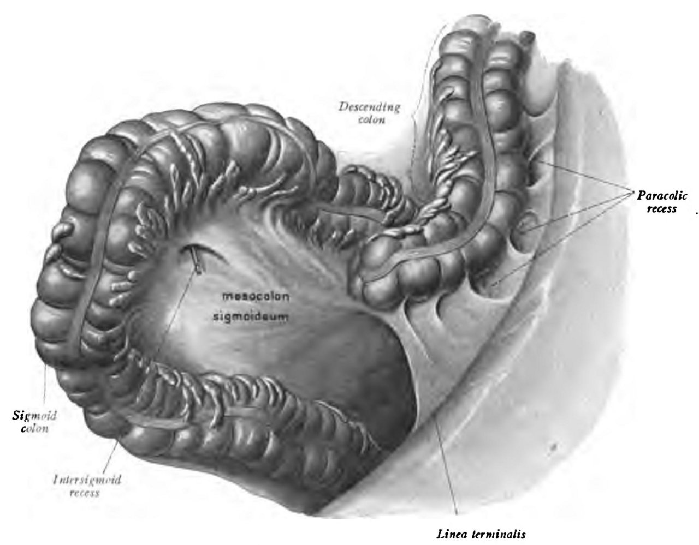
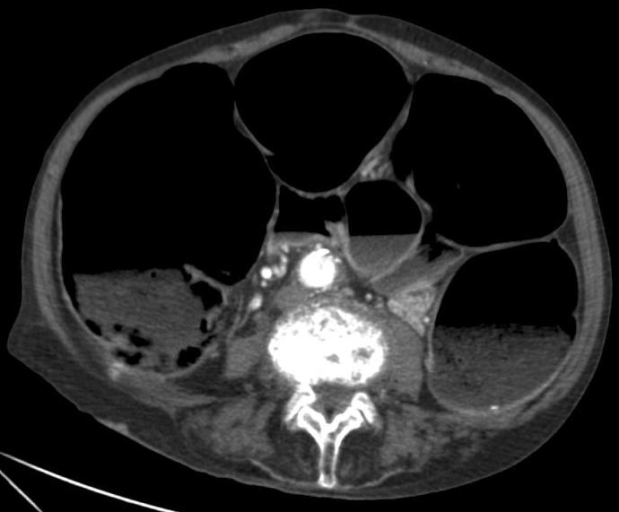

דיון מקרים: חסימה קולונית
שלושה מטופלים עם בטן תפוחה. מה האבחנה, מה בודקים ומה עושים עכשיו
בסוף המפגש תדעו
- לבנות אבחנה מבדלת לבטן תפוחה בלי יציאות: מכנית מול תפקודית
- לקרוא צילום בטן בחשד לוולבולוס ולפסאודו-חסימה ולדעת מתי צריך CT
- להחליט בין התרה אנדוסקופית, ניתוח דחוף וכריתה מתוכננת בוולבולוס של ה-sigmoid
- לבחור בין כריתה דחופה, השקה, סטומה וסטנט בגידול חוסם בצד שמאל
- לטפל בשלבים באוגילבי אחרי ניתוח ולזהות מתי השמרני נכשל
בן 84 מבית אבות, "הבטן שלו כמו תוף"
- פרקינסון, דמנציה, עצירות כרונית. מקבל תרופות אנטי-פסיכוטיות
- שלושה ימים בלי יציאות ובלי גזים. הבטן הולכת ומתנפחת. היום הקיא פעם אחת
- לפי הצוות: "כבר היה לו פעם משהו דומה ועבר"
- דופק 96, ל״ד 135/80, חום 37.4
- בטן תפוחה מאוד וטימפנית, רגישות קלה מפושטת, בלי התגוננות ובלי כאב בשחרור. מפשעות תקינות. ב-rectum: ריק

הצילום אומר הכול
▸ אבחנה מבדלת
- וולבולוס של ה-sigmoid: מבוגר, עצירות כרונית, אירועים קודמים
- גידול חוסם בצד שמאל
- פסאודו-חסימה (אוגילבי): מחלה נוירולוגית ותרופות
- צואה דחוסה, היצרות על רקע סעיפים, בקע
▸ מה רואים בצילום
לולאה ענקית מלאת גז בצורת "צינור פנימי מקופל" או "פולי קפה": קטע sigmoid מסובב על ה-mesentery שלו. זו לולאה סגורה. ב-CT רואים מערבולת ב-mesentery ואפשר להעריך גם איסכמיה
▸ מה יעשה את זה דחוף יותר
- פריטוניטיס, חום, טכיקרדיה, רגישות ממוקדת
- לויקוציטוזיס, CRP גבוה, לקטט עולה, BE שלילי, pH נמוך
- ב-CT: סימני איסכמיה או נקב מתקרב
למה דווקא ה-sigmoid מסתובב

👆 לחצו על אזור בציור כדי לקרוא עליו
לולאה ארוכה וניידת. בוולבולוס היא מסתובבת סביב הציר של ה-mesocolon וחוסמת את עצמה משני הצדדים: לולאה סגורה שמתנפחת עד איסכמיה ונקב
כל קטע ב-colon שלא מקובע ל-retroperitoneum ויש לו mesentery מוארך יכול להסתובב. הלחץ על ה-mesentery חוסם קודם את הוורידים ואחר כך את העורקים
מקובע לדופן האחורית ולכן לא מסתובב. מעל הפיתול הוא מתרחב בגלל הגז והצואה שמצטברים
מה עושים עכשיו ומה אחר כך
▸ אין סימני איסכמיה. מה הצעד הראשון?
התרה אנדוסקופית בסיגמואידוסקופ קשיח או גמיש והשארת שרוול רקטלי מעבר לנקודת הפיתול
▸ ההתרה הצליחה. אפשר לשחרר הביתה?
לא בלי תוכנית. החזרה שכיחה ולכן ממליצים על כריתה מתוכננת של ה-sigmoid עם השקה ראשונית, אחרי שהמעי הוכן והמטופל אוזן
▸ ההתרה נכשלה, או שבאנדוסקופיה רואים רירית כהה
ניתוח: כריתה של ה-sigmoid וקולוסטומיה (Hartmann). פריטוניטיס, נקב או מעי איסכמי: לחדר ניתוח מיד, בלי ניסיון אנדוסקופי
בת 71: "כבר חודשיים משהו לא בסדר"
- חודשיים של עצירות שמחמירה וצואה דקה. פעמיים דם טרי על הנייר
- ארבעה ימים בלי יציאות ובלי גזים, כאבי בטן גליים, בחילה
- לא עברה קולונוסקופיה מעולם
- דופק 104, ל״ד 128/76, חום 37.2
- בטן תפוחה מאוד, רגישות בבטן ימנית תחתונה, בלי התגוננות. מפשעות תקינות. ב-rectum: ריק, בלי גוש במישוש
- צילום: colon מורחב עד ה-sigmoid, ה-cecum 11 ס״מ, כמעט בלי גז ב-rectum. ה-small bowel לא מורחב

ה-cecum נמתח: השעון מתקתק
▸ למה ה-small bowel לא מורחב?
ה-ileocecal valve שלם ולא נותן לתוכן לחזור ל-small bowel. נוצרה לולאה סגורה בין ה-valve לגידול: הופעה חריפה וסיכון גבוה לנקב
▸ למה הרגישות מימין?
ה-cecum הוא הקטע הרחב ביותר ולפי חוק לפלס המתח בדופן שלו הגבוה ביותר. כשהלחץ בדופן עולה מעל לחץ הנימים מתפתחת איסכמיה. הנקב קורה ב-cecum גם כשהגידול ב-sigmoid. רגישות מעל ה-cecum היא אזהרה
▸ איזו בדיקה עכשיו?
CT עם ניגוד בווריד (ובחשד לחסימה קולונית עדיף גם ניגוד רקטלי): מיקום וסיבה, תקינות ה-ileocecal valve, סימני איסכמיה ונקב מתקרב ובמקביל הערכת גרורות. מעבדה: אלקטרוליטים, ספירה, לקטט, גזים, סוג והצלבה
ב-CT: גידול חוסם ב-sigmoid. ומה עכשיו?
▸ תרחיש א׳: ה-cecum לא נראה חיוני
לחדר ניתוח מיד. כשהמעי הקרוב לגידול מנוקב או איסכמי: קולקטומיה תת-טוטלית
▸ תרחיש ב׳: יציבה, cecum חיוני
בדרך כלל ניתוח דחוף וכריתה של הקטע. Hartmann (קולוסטומיה וגדם רקטלי סגור), או השקה ראשונית עם או בלי סטומה מסיטה: רק כשהיא יציבה וההשקה בלי מתח ועם אספקת דם טובה
▸ תרחיש ג׳: סטנט כגשר לניתוח
משחרר את החסימה ומאפשר ניתוח מתוכנן: יותר השקות ראשוניות, פחות זיהומי פצע, יותר לפרוסקופיה. סיבוכים: תזוזה, נקב, חסימה חוזרת. אסור כשיש חשד לאיסכמיה או לנקב ולכן לא בתרחיש א׳
▸ תרחיש ד׳: גרורות נרחבות, מטופלת חלשה
סטנט כטיפול פליאטיבי מתאים במיוחד למטופלים בסיכון ניתוחי גבוה
בן 79, יום שלישי אחרי החלפת מפרק ירך
- אי ספיקת לב, COPD. מקבל אופיאטים לכאב
- מאתמול הבטן מתנפחת, בחילה, לא היו יציאות. הוא לא נראה חולה מאוד
- דופק 88, חום 37.3. בטן תפוחה וטימפנית, בלי רגישות משמעותית
- מעבדה: אשלגן 3.1, ספירה תקינה
- צילום: colon מורחב כולו, גז עד ה-rectum, cecum 10 ס״מ

פסאודו-חסימה: אין שום דבר שחוסם
▸ למה אוגילבי?
מבוגר עם מחלות רקע, אחרי ניתוח אורתופדי, עם אופיאטים והיפוקלמיה. הגז מגיע עד ה-rectum ובחסימה מכנית כמעט אין גז מעבר לחסימה
▸ מה לשלול?
חסימה מכנית ומגה-קולון טוקסי (C. difficile). CT הוא הבדיקה המאשרת: מבדיל ממכני ומחפש איסכמיה או נקב מתקרב
▸ ההוראות להיום
- צום, תיקון אשלגן ואלקטרוליטים
- להפסיק או להפחית אופיאטים ותרופות אנטיכולינרגיות
- זונדה ושרוול רקטלי (בזהירות)
- בלי משלשלים אוסמוטיים או מגרים: הם מגדילים את ההרחבה
- הליכה, שכיבה על הבטן או ברכיים-חזה
- בדיקה וצילום חוזרים
ה-cecum 13 ס״מ, עדיין בלי רגישות
▸ הצעד הבא
ניאוסטיגמין 2–2.5 מ״ג בווריד במשך 3–5 דקות, במוניטור עם אטרופין מוכן. מצפים לגזים וליציאה. הצלחה 60–94%, חזרה עד 31%
▸ למה לחשוב פעמיים אצל המטופל הזה?
יש לו COPD ומחלת לב: זהירות. גם באסתמה, ברדיקרדיה, תסמונת כלילית חריפה ואי ספיקת כליות. התוויית נגד: חסימה מכנית, איסכמיה, נקב. תופעות לוואי: הקאות, כאבים, ריור, ברדיקרדיה
▸ ניאוסטיגמין לא עבד
קולונוסקופיה עם מינימום ניפוח, עד הצד הימני והשארת צינור הנקזה. הצלחה ראשונית 61–95%, נקב 1–3%
▸ מופיעים חום, רגישות ולויקוציטוזיס
חשד לאיסכמיה או לנקב: ניתוח. מעי חיוני: צקוסטומיה. איסכמיה או נקב: כריתה, בדרך כלל עם סטומה. כשזה כבר קורה, התמותה קרובה ל-50%
מה מבדיל ביניהם
מחקרים שכדאי להכיר
אבחנה בצילום ("פולי קפה"), CT כשיש ספק או חשד לאיסכמיה. בלי איסכמיה: התרה באנדוסקופ גמיש כקו ראשון (יעילה ב-60–95%). אחרי התרה מוצלחת החזרה 43–75% ולכן כריתה מוקדם ככל האפשר, גם באותו אשפוז
Tian BWCA et al. World J Emerg Surg 2023;18:34377 מטופלים עם גידול חוסם בטיפול פליאטיבי, סטנט מכוסה מול לא מכוסה. הסטנט לא הצליח ב-12.5%. פתיחות אחרי 6 חודשים: 72.7% במכוסה, 81.9% בלא מכוסה. יותר סיבוכים במכוסה, בעיקר תזוזה. איכות החיים דומה
CReST2 Collaborative Group. Br J Surg 2025;112(9):znaf117כשהשמרני נכשל. שלושה מחקרים רטרוספקטיביים בלבד: הצלחה 47% עם ניאוסטיגמין לעומת 83% עם קולונוסקופיה. אין עדיין מחקר אקראי ולכן זו ראיה חלשה
Demetriou G et al. J Surg Res 2025;313:89-95חמישה דברים לקחת למחלקה
- לכל בטן תפוחה: שלושה שאלות. האם יש לולאה סגורה? האם יש איסכמיה? מכני או תפקודי?
- גז עד ה-rectum מכוון לאוגילבי. מעט גז מעבר לנקודה מכוון לחסימה מכנית
- וולבולוס של ה-sigmoid שהותר עדיין צריך תוכנית לכריתה
- בגידול שמאלי עם ileocecal valve שלם, מסתכלים על ה-cecum: רגישות שם היא אזהרה
- באוגילבי לא נותנים משלשלים ולא נותנים ניאוסטיגמין בלי מוניטור ואטרופין